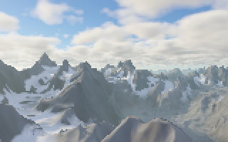
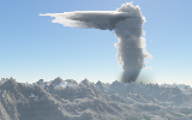
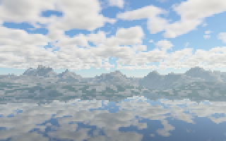
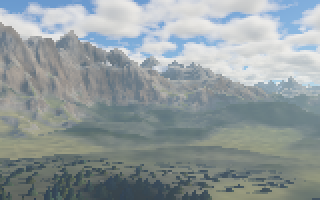
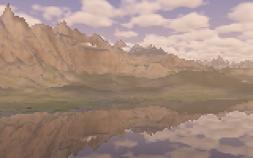
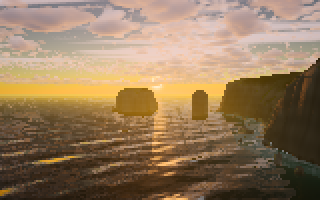
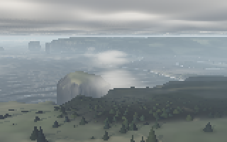
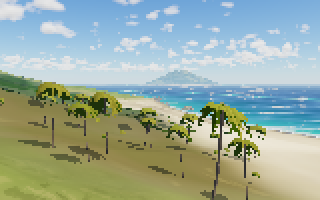
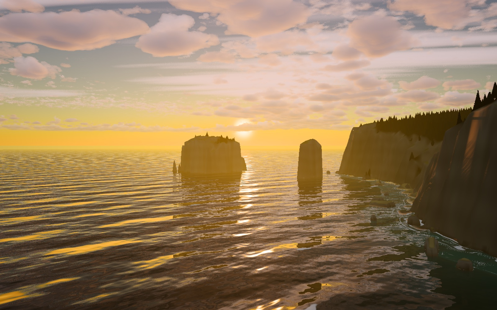

fractal_clouds #117 · pscat compute kernels · November 2026
All eight gallery scenes now run through pscat's compiled kernelimage. Each one is 22–77× faster than the interpreter, and its output matches byte for byte. This report covers how we got there, what we learned, why the GPU path was parked, and the GPU options nobody has tried.








The test frames from the CI build: 160×100 kernels, drawn at 320×200 with antialiasing off. Each is cmp-identical to a fresh /interpret .kernelmode render. The number is the compiled speedup over that interpreted render.
w h matrix proc ncomp kernelimage takes a per-pixel procedure, here fractal_clouds' fc-pixel ray marcher, and compiles it into a register IR. A lane-batched executor then runs that IR on all ten cores. Each IR instruction runs as one loop over a batch of 16 pixels, and branches become masks. Pixels the compiler can't handle "retire" to the interpreter. The default path computes exactly what the interpreter computes, in the same order, so the PNG bytes match.
For this repo that changes how looks get tuned. A golden_coast frame at 640×400 took 9 minutes interpreted and takes 7–9 seconds compiled.
6 of 8 compile. pnw_coast retired 5,596 pixels to the interpreter and tropical_island all 16,000. Both had the same cause: fc-tree-species wrote its species weights into a shared global array (FsMixWt … put). That is a real per-pixel side effect, so pscat was right to refuse it.
With that write removed in an experiment, both scenes then hit the 400,000-instruction size cap instead.
Species weights moved to a fresh per-call array. The output didn't change (regress 14/14, every PNG identical).
The cap had been counting code before dead-code removal: about 870k counted for a kernel that ends up at 251k. The /auto sharing heuristic then kept the wrong pass. build1 gave the shared pass its own 2M cap.
It also added IEEE-exact SIMD for division, square root, compares and rounding (#1099).
In fc-tree-shade-trunk, one branch of an if left an array and the other a table row. The kernel compiler needs both branches to leave the same stack shape, so both now leave three numbers. On tropical_island, the 185 pixels that took this branch had sent the whole frame to the interpreter. Output unchanged.
8 of 8 compile, nothing retires, all byte-identical.
build1's code plus review fixes. The review removed build1's extra purity-scan rules as unsound, which costs nothing here because no scene needs them. Same kernels, same bytes. This is the build fastrender.sh uses now.
| scene | kernel | compile | run | compiled | interpreted | speedup |
|---|---|---|---|---|---|---|
| mountains | 103,130 instr · 96 regs | 72 ms | 246 ms | 0.32 s | 18.8 s | 59× |
| storm | 140,521 instr · 96 regs | 102 ms | 170 ms | 0.28 s | 21.2 s | 77× |
| charted_range | 35,690 instr · 116 subs | 172 ms | 301 ms | 0.48 s | 34.9 s | 73× |
| alpine_forest | 42,421 instr · 128 subs | 284 ms | 439 ms | 0.72 s | 32.8 s | 45× |
| evening_lake | 91,866 instr · 140 subs | 500 ms | 363 ms | 0.87 s | 34.5 s | 40× |
| golden_coast | 169,959 instr · 222 subs | 917 ms | 347 ms | 1.27 s | 28.1 s | 22× |
| pnw_coast | 251,190 instr · 235 subs | 1,299 ms | 700 ms | 2.01 s | 52.0 s | 26× |
| tropical_island | 232,109 instr · 207 subs | 1,235 ms | 1,083 ms | 2.33 s | 74.1 s | 32× |
"subs" are shared subroutines: code that pscat keeps once and calls, rather than inlining at every call site. At this size compile time is a large share of the total, so the speedups here understate the large-frame gains.
| scene | kernel size | compile | compiled total | interpreted | peak memory |
|---|---|---|---|---|---|
| mountains | 640×400 | 74–78 ms | 4.3–5.1 s | 405 s · 80–94× | 89 MB |
| mountains | 1280×800 | 70 ms | 14.9 s | ~27 min (scaled) | 90 MB |
| golden_coast | 640×400 | 0.94–1.06 s | 6.6–8.6 s | 539 s · 63–81× | 335–398 MB |
| golden_coast | 1280×800 | 1.04 s | 27.7 s | ~36 min (scaled) | 344 MB |
Both 640×400 frames are byte-identical to their interpreted renders. The 1280×800 interpreted times are scaled from the 640×400 runs, not measured. The machine's load average was 4–11 during these runs.

put into an array defined outside the pixel procedure is a side effect that one pixel leaves for the next. Allocate a fresh array per call instead.if/ifelse must leave the same stack shape. "An array" on one side and "a table row" on the other counts as different, even when the caller only reads three numbers from either.PSCAT_KERNEL_TIMING=1 names each cause with a count./auto sharing choice compared the wrong things and kept the unshared pass. Fixed alongside the cap.pow, log, sin and cos together are under 4%, so approximate maths can't help much. 16-pixel batches beat both 8 and 32; 32 was 1.4–2× slower, because these ray marchers branch a lot.pscat has an opt-in GPU backend (--gpu-preview, a build feature). It turns the compiled kernel into WGSL shader text and hands it to wgpu. wgpu's naga translates it to Metal Shading Language, Metal compiles that, and the image runs in f32. On pscat's own gallery pieces it is another 23–68× over the CPU kernels, so it looked like the next step. The pscat-gpu session tried it on our scenes and hit three separate walls.
The GPU lowering can't call a subroutine. It inlines every call, and refuses a kernel that grows past 220 (about a million) instructions. That's fine for mountains and storm, which have no shared subroutines. The other six (golden_coast, pnw_coast, tropical_island, evening_lake, alpine_forest and charted_range) only fit on the CPU because pscat shares their subroutines. Inlined, they blow past the limit. They are also the slow scenes.
The obvious fix is to emit subroutines as real WGSL functions. pscat-gpu tried that, with the functions sharing registers through var<private> state. Metal's shader compiler ran for over 10 minutes on golden_coast before it was stopped, and the change was reverted.
Mountains does run on the GPU. It passes our look test easily (PSNR 55.5 dB, mean delta 0.013), and its dispatch is 20 ms against about 200 ms on the CPU. But building the shader costs 5–12 s each time pscat starts, nearly all of it in naga's WGSL parser (Typifier::grow), not in Metal.
This repo starts one pscat process per frame. render.sh, the previews and fastrender.sh all work that way, and banded renders use several processes for one frame. So the toll is paid on every frame.
What was left was a mountains-and-storm-only GPU build. At 2560×1600 it would take a mountains frame from about 60 s on the CPU to roughly 10–17 s. I declined it: the slow scenes couldn't use it, look work moves across all eight, and the next CPU step (#1101) helps every scene. pscat-gpu agreed and parked the GPU. Looking back, the declined build was still about a 4× win on two scenes, and I underweighted that. If the owner spends a stretch on mountains or storm, it is worth asking for again.
All three walls come from one design choice: each kernel becomes its own shader. That makes shader size grow with scene size, makes every look tweak a new shader, and puts a compiler on every frame's critical path. The ideas below mostly attack that choice. None of them has been built or measured. They are ranked by how much of the problem each one removes.
A correction to the record first. pscat's notes say the two real fixes, building naga IR directly and keeping calls out of line in MSL, are "not in reach through wgpu today". The pinned wgpu 30.0.1 source has both:
ShaderSource::Naga behind the naga-ir feature takes a naga module and skips the WGSL parser. Features::PASSTHROUGH_SHADERS lists Metal and takes msl text or a precompiled metallib, skipping naga entirely. wgpu's own PIPELINE_CACHE is Vulkan-only, but Metal keeps its own system shader cache. pscat's #742 notes measured that cache: 75–660 ms cold, 17–25 ms warm.
Removes all three walls · biggest unknown is speed · untested
Instead of translating each kernel into a shader, write one compute shader that interprets pscat's kernel IR, read from a storage buffer. pscat's CPU executor is already this kind of machine: a masked, structured interpreter over 16 lanes. A GPU version runs the same program per thread, and the hardware handles the masking.
A clean test: mountains is the one scene with a CPU path (about 200 ms at 160×100) and a compiled GPU path (20 ms). Running the interpreter shader on it measures the interpretation cost directly. If golden_coast at 1280×800 comes in at least 3× under the CPU executor, it's worth building out.
Removes wall 3 for mountains and storm · small, contained change · untested
pscat already writes shader text, so it could write MSL instead of WGSL and pass it through, or build the naga module directly. Either removes the 5–12 s parse. Add a disk cache of the compiled metallib, keyed by a hash of the source, and a repeated render costs milliseconds. On its own this doesn't help the six big scenes. It also makes a cleaner test bed for wall 2: hand-written MSL controls its own inlining, which naga's output doesn't.
Needed for B or any cache to pay off during look work · unanswered question
The lowering writes every constant into the shader text, so changing a fog density or a sun angle makes a new shader and the cache misses. I asked pscat-gpu whether constants could move to a uniform buffer and didn't get an answer before the GPU was parked. One limit: a setting the compiler folds into control flow (a feature switched off, a loop count) would still change the shader. Settings that are only numbers would not.
Never slower than the CPU alone · today it only applies to mountains and storm
Begin rendering rows on the CPU executor immediately. Compile the shader on another thread, and when it's ready, hand the GPU the rows nobody has started. Small frames finish on the CPU before the shader is ready, and large ones pick up most of the GPU's speed. This makes the 5–12 s toll free in the worst case. Mixing f32 GPU rows with exact CPU rows could show as banding, which would need a look check.
The standard fix for "the shader is too big" · large change on both sides · long term
Offline GPU renderers moved away from one giant per-pixel shader for the same reasons we hit (Laine, Karras and Aila, "Megakernels Considered Harmful", HPG 2013). They run a sequence of small kernels instead (march, shade terrain, shade water, trees, sky), passing each pixel's state through buffers. Each kernel is small, compiles fast, and runs pixels that take the same path together. In pscat this would build on the general multi-pass buffer API already proposed (#1044), with no fractal_clouds-specific operators. Our depth-edge antialiasing (#114) already needs a two-pass form, so the same API would serve both.
i32/u32 registers would make the hashes exact.pscat-kernels-7afa9f9/, verified against the CI archive's SHA-256. fastrender.sh uses it by default, and PSCAT_KERNEL_DIR points it elsewhere.renders/k117b/ (not committed): run2.sh renders each scene compiled and interpreted and compares them, big.sh renders large frames with memory use, and imgdiff.py holds the look-test thresholds.notes/compute-kernels-handoff.md and notes/1091-1093-1099-kernel-followups.md on feature/compute-kernels. The GPU lowering is src/kernel/gpu.rs.